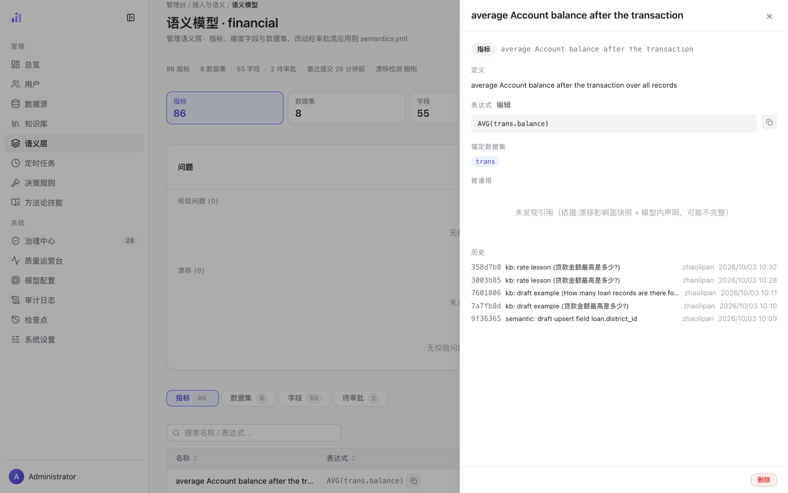
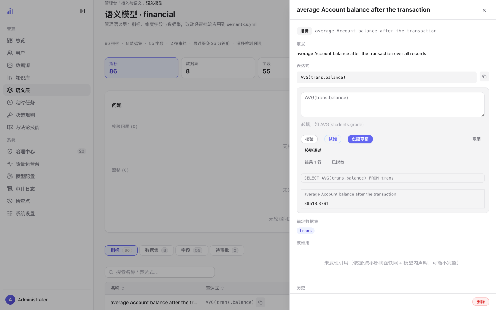

语义层治理
语义模型（semantics.yml）是 Trove 生成答案的权威口径：
指标怎么算、维度锚在哪个数据集，编译器就按它拼 SQL。
/admin/semantic 是它的工作台——所有改动先草稿、后审批，确认才写入文件。
工作台全貌
 1
2
3
4
5
1
2
3
4
5
- 1页头动作——切换数据源、重新检测漂移（对照物理 schema 的实时探测）、新建资产（新增指标 / 数据集 / 字段，同样走草稿）。
- 2摘要行——指标 / 数据集 / 字段 / 待审批 / 最近提交时间 / 漂移检测时间。一眼确认「模型有多大、上次动是什么时候」。
- 3五项 KPI——每项都是入口：指标 / 数据集 / 字段 / 待审批点开即切 tab；「待处置问题」点开按问题过滤（再点一次取消）。
- 4问题面板——两个独立小节：校验问题（lint：表达式语法、数据集锚定、引用完整性）与漂移（物理 schema 与模型不符，如列被删改）。全净时就是一行「无校验问题 · 未发现漂移」——这一行是日常巡检的目标状态。
- 5四个 tab 与资产表——指标 / 数据集 / 字段 / 待审批；表内可按名称、表达式排序与搜索。点任意行打开资产详情（图 2）。
资产详情：一条指标的全息档案

1 2 3 4 5- 1表达式——指标的计算式（
AVG(trans.balance)），可一键复制；「编辑」进入图 3 的编辑器。 - 2锚定数据集——这条指标声明依赖哪个数据集（
trans）。编译器据此决定 join 范围；锚定错了，生成的 SQL 会整体走偏。 - 3被谁用——引用它的示例 / 教训等资产。注意边界提示：「依据漂移影响面快照 + 模型内声明，可能不完整」——不确定的地方不装确定。
- 4历史——每次改动的提交记录（短哈希、变更类型与标题、提交人、时间）。谁在什么时候改的、改的是什么，从 git 视角可追。
- 5删除——危险动作，删除同样先落草稿、经审批才生效；引用它的资产会在「被谁用」里暴露出来，删之前先看这里。
改一条表达式：校验 → 试跑 → 创建草稿
点表达式旁的「编辑」打开编辑器。三个按钮是一条顺序化的流程： 先校验（结构 lint，通过前「创建草稿」保持禁用），再试跑（用与用户问答同一条编译路径 跑一次真实查询），最后创建草稿。

1 2 3- 1表达式文本域——改计算式本身（如把
AVG换成别的聚合）。语法约束在下方有提示。 - 2校验 / 试跑 / 创建草稿——校验给出结构结论（图中「校验通过」）；试跑把表达式交给真实编译器与数据库；创建草稿把这次改动登记进待审批队列。试跑通过 ≠ 直接生效，生效永远在审批之后。
- 3试跑结果——编译器实际生成的 SQL（
SELECT AVG(trans.balance) FROM trans）与一行真实结果，按脱敏策略回显（图中标注「已脱敏」）。改口径前先看它跑出来什么数——这是比读表达式更可靠的确认。
草稿进入「待审批」tab 后会带一份服务端计算的 diff；打开草稿时系统会重新校验——
校验不过的草稿不能应用（按钮禁用，原因就摆在旁边）。确认后才写入 semantics.yml，
并作为一次提交留痕（图 2 的历史）。批量勾选可以一次确认或拒绝多条。
语义模型是编译路径的输入：一条表达式改错，所有命中它的提问都会拿到一个「语法正确、口径错误」的答案， 而且答案来源档位还会写着「语义编译」——错得越自信越危险。 草稿 + diff + 重新校验 + 落盘留痕，四道都为了把「改口径」变成一个可回退的动作。
漂移检测：物理库不打招呼就变了
「重新检测漂移」把语义模型与物理 schema 的当前状态对照一遍：列被删、类型被改、数据集对应的表 消失，都会成为漂移条目。检测本身失败（例如探测超时）时状态保持「未检测」， 不会洗成「无漂移」——不知道就说不知道。漂移的处置与影响面分析在 漂移检测（运维）与治理中心。
相关页面
| 你想做的事 | 去哪一页 |
|---|---|
| 补词表（术语、同义词、定义） | 知识库运营 · 术语与指标 |
| 看编译机制（语义编译档位怎么来） | 查询工作流 |
| 漂移的处置与影响面 | 漂移检测 |
| 给用户解释「为什么这个答案来源是编译」 | 提问与读懂答案 · 来源四档 |
本页截图为真实界面（隔离的演示实例，数据是内置 BIRD 金融演示库）；
可用前端仓库里的 npm run shots 重新生成，_manifest.json 记录每张图的来源提交。